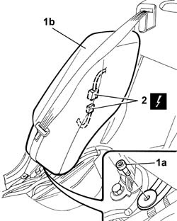
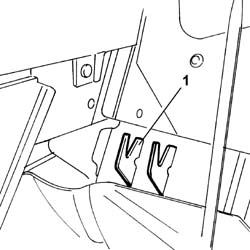

7050A47 Side panel (one) for rear seat backrest, left or right - R.R.
- Path
- Procedures > 70 FITTINGS > 7050 REAR SEATS > 7050A REAR SEAT ASSEMBLY > 7050A47 Side panel (one) for rear seat backrest, left or right - R.R.
- Kind
- repair procedure (removal / refitting; the operation number is the code)
- Applies to
- all engines; all production periods
- Interactive page
- https://sloeber94.github.io/elrnDB-lThss/en/#/197433
Applies to: all engines; all production periods
Applies to: all engines; all production periods
 Removing
Removing
 Refitting
RefittingSee in Op. 7050A20 Single rear seat cushion - R.R.
See in Op. 7050A19 REAR SEAT BACKREST - R.R.
1. Undo the lower fixing bolt (1a) and remove the side panel for the rear seat (1b) from the housing.
2. Disconnect the electrical connector for the rear seat Air Bag module
 | Description | Connector |
|---|---|---|
2 | Left rear Air Bag | Q042 |
| Description | Connector |
|---|---|---|
2 | Right rear Air Bag | Q043 |

Applies to: all engines; all production periods
Refitting
Removing1. Attach the rear seat side panel to the support.

Applies to: all engines; all production periods
1. Fasten the side panel (1a) using the bolt (1b).
2. Connect the electrical connector for the rear seat Air Bag module
| Description | Connector |
|---|---|---|
2 | Left rear Air Bag | Q042 |
| Description | Connector |
|---|---|---|
2 | Right rear Air Bag | Q043 |
Applies to: all engines; all production periods
See in Op. 7050A19 REAR SEAT BACKREST - R.R.
See in Op. 7050A20 Single rear seat cushion - R.R.
- Connect the battery leads.